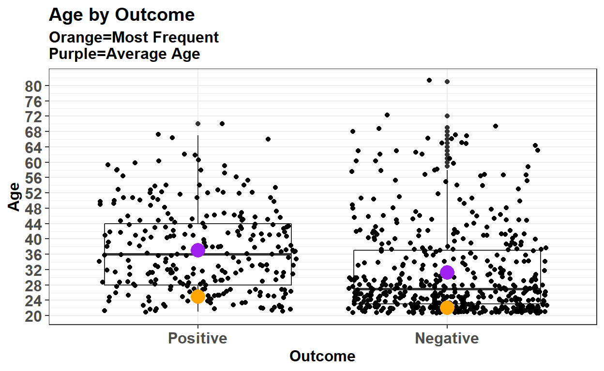
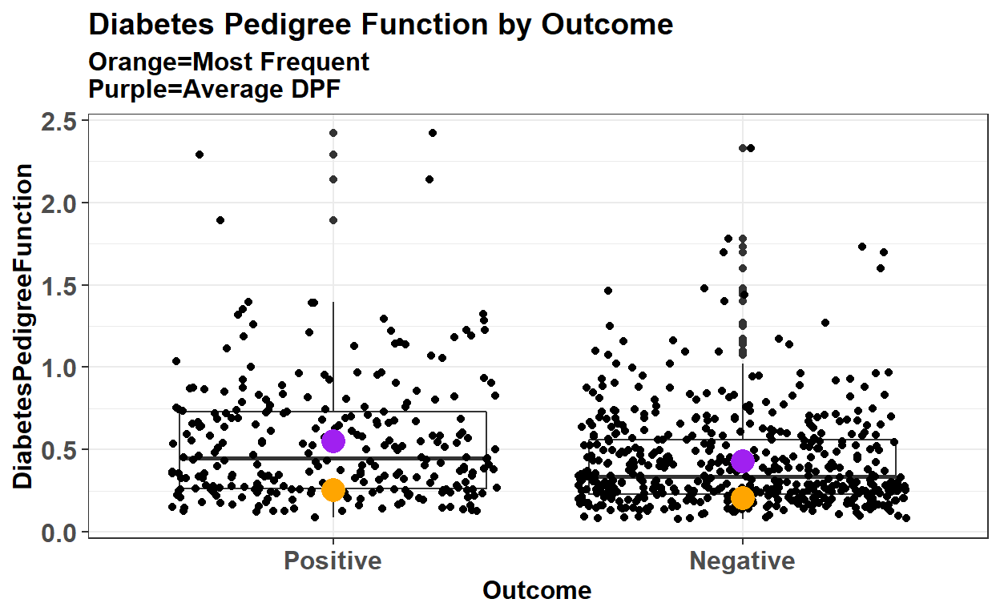

In this post we will explore the Pima Indian dataset from the UCI repository. This post will aim to showcase different ways of thinking of your data. Most novices to data science would rush into data preprocessing and not explore the data properly. The data cleaning stage can be subjective at times and here I offer my own view and opinons on this dataset
The data used in the current project contains a number of diagnostic measures of type 2 diabetes in women of the Pima Indian heritage, and whether or not the individual has type 2 diabetes. The dataset was obtained from Kaggle at (https://www.kaggle.com/uciml/pima-indians-diabetes-database). There is a total of 768 observations and 9 variables. The variables in the dataset are:
library(readr)
library(tidyverse)
library(dplyr)
library(tidyr)
library(knitr)
library(pipeR)
glimpse(Diabetes)
Observations: 768
Variables: 9
$ Pregnancies <int> 6, 1, 8, 1, 0, 5, 3, 10, 2, 8, 4...
$ Glucose <int> 148, 85, 183, 89, 137, 116, 78, ...
$ BloodPressure <int> 72, 66, 64, 66, 40, 74, 50, 0, 7...
$ SkinThickness <int> 35, 29, 0, 23, 35, 0, 32, 0, 45,...
$ Insulin <int> 0, 0, 0, 94, 168, 0, 88, 0, 543,...
$ BMI <dbl> 33.6, 26.6, 23.3, 28.1, 43.1, 25...
$ DiabetesPedigreeFunction <dbl> 0.627, 0.351, 0.672, 0.167, 2.28...
$ Age <int> 50, 31, 32, 21, 33, 30, 26, 29, ...
$ Outcome <int> 1, 0, 1, 0, 1, 0, 1, 0, 1, 1, 0,...
mlr::summarizeColumns(Diabetes) %>%
kable(caption="Summary Table of Diabetes") | name | type | na | mean | disp | median | mad | min | max | nlevs |
|---|---|---|---|---|---|---|---|---|---|
| Pregnancies | integer | 0 | 3.8450521 | 3.3695781 | 3.0000 | 2.9652000 | 0.000 | 17.00 | 0 |
| Glucose | integer | 0 | 120.8945312 | 31.9726182 | 117.0000 | 29.6520000 | 0.000 | 199.00 | 0 |
| BloodPressure | integer | 0 | 69.1054688 | 19.3558072 | 72.0000 | 11.8608000 | 0.000 | 122.00 | 0 |
| SkinThickness | integer | 0 | 20.5364583 | 15.9522176 | 23.0000 | 17.7912000 | 0.000 | 99.00 | 0 |
| Insulin | integer | 0 | 79.7994792 | 115.2440024 | 30.5000 | 45.2193000 | 0.000 | 846.00 | 0 |
| BMI | numeric | 0 | 31.9925781 | 7.8841603 | 32.0000 | 6.8199600 | 0.000 | 67.10 | 0 |
| DiabetesPedigreeFunction | numeric | 0 | 0.4718763 | 0.3313286 | 0.3725 | 0.2483355 | 0.078 | 2.42 | 0 |
| Age | integer | 0 | 33.2408854 | 11.7602315 | 29.0000 | 10.3782000 | 21.000 | 81.00 | 0 |
| Outcome | integer | 0 | 0.3489583 | 0.4769514 | 0.0000 | 0.0000000 | 0.000 | 1.00 | 0 |
The outcome variable needs to be converted into a categorical variable. It will be ordered to accomodate analysis purposes in the near future.
Diabetes$Outcome <- as.factor(unlist(Diabetes$Outcome))
Diabetes$Outcome <- factor(Diabetes$Outcome, levels=c("1", "0"),
labels = c("Positive", "Negative"))
summary(Diabetes$Outcome)
Positive Negative
268 500 We can see that there are almost twice as many people wihtout diabetes than there are with diabetes. While there is no universal cutoff for the number of rows for your target variable, this should suffice.
We just need to make sure that there is enough data for your model to learn how to differentiate between the two.
The following variables:
* Glucose
* BloodPressure
* SkinThickness
* Insulin
* BMI need to be converted into numeric variables from its current integer class. These variables have decimal values and its absence could potentially create misleading results and distort specified ranges of risk represented by those medical tests.
Diabetes$Glucose <- as.numeric(Diabetes$Glucose)
Diabetes$BloodPressure <- as.numeric(Diabetes$BloodPressure)
Diabetes$SkinThickness <- as.numeric(Diabetes$SkinThickness)
Diabetes$Insulin <- as.numeric(Diabetes$Insulin)
Diabetes$BMI <- as.numeric(Diabetes$BMI)
Diabetes$Age <- as.integer(Diabetes$Age)\({6/9}\) variables in the dataset have a number of zero markers. It appears that after taking the sum of each column and row separately, there are 763 0 values in the dataset. Alarmingly, this represents almost 100% of our observations.
list(
`Column` = colSums(Diabetes==0),
Row = sum(rowSums(Diabetes==0))
)
$Column
Pregnancies Glucose
111 5
BloodPressure SkinThickness
35 227
Insulin BMI
374 11
DiabetesPedigreeFunction Age
0 0
Outcome
0
$Row
[1] 763A value of ‘0’ does not necessarily mean it is a missing value. For example: A woman has a zero record of pregancies because that woman has not been pregnant.
This is one example on how careful you have to be when preprocessing your data for missing values. Zero does not mean it is missing. However in addition to that point, zero values could create problems when passing it to a machine learning model. Techniques like Regression can give you an estimate of the output when the variable is zero. Another method of dealing with zeros could be to bin the variable which will then create a categorical variable.
Diabetes$Pregnancies <- ifelse(Diabetes$Pregnancies==0, "No", "Yes") %>%
factor()
colSums(Diabetes==0)
Pregnancies Glucose
0 5
BloodPressure SkinThickness
35 227
Insulin BMI
374 11
DiabetesPedigreeFunction Age
0 0
Outcome
0
summary(Diabetes$Pregnancies)
No Yes
111 657 50% of the rows in Insulin have 0 values. Lets look at it in a practical sense. There are times when the body produces little to no insulin which is a sign on Type 1 Diabetes. But I doubt this is the case in this instance. Insulin is such an important variable concerning Diabetes, but when a variable is just rife with missing values you have to do something about it. You can just impute the values, but this is medical data and half of the values are missing. It would not be appropriate to just impute the rows with it mean in my opininon. That’s why no matter how important it is, it has to be REMOVED. This is one of those times where you need to make a tough call.
Diabetes$Insulin <- NULL
colSums(Diabetes==0)
Pregnancies Glucose
0 5
BloodPressure SkinThickness
35 227
BMI DiabetesPedigreeFunction
11 0
Age Outcome
0 0 The same can be said for SkinThickness. 31% of its rows have 0 as a value. Practically how can a human have 0mm skinfold thickness. This variable is also not giving us much use. Therefore I will remove this variable as well.
Diabetes$SkinThickness <- NULL
colSums(Diabetes==0)
Pregnancies Glucose
0 5
BloodPressure BMI
35 11
DiabetesPedigreeFunction Age
0 0
Outcome
0 BMI can be supplemented with its respective range of obesity criteria. BMI only has 11 0 values so it would not be expected to cause too much trouble. If it was substantially higher, binning would not really solve the problem because the allocated bin may not be its correct one.
Diabetes$BMI <-
ifelse(Diabetes$BMI<19,"Underweight",
ifelse(Diabetes$BMI>=19 &
Diabetes$BMI<=25, "Normal",
ifelse(Diabetes$BMI>=25 &
Diabetes$BMI<=30, "Overweight","Obese"))) %>%
factor(levels=c("Underweight","Normal",
"Overweight","Obese"))
list(BMI = summary(Diabetes$BMI))
$BMI
Underweight Normal Overweight Obese
15 108 180 465 So now I see that Underweight has 15 rows which means there were 15 rows that had a BMI less than 19 and knowing that BMI had 11 zero values, we know that most of the rows are zero. Because it is so little, I am choosing to keep it. Also, we have already removed two variables and I want to retain as much data as possible while making sure it can add value.
With a 2 hour ‘Oral Glucose Tolerance Test’ (OGTT), people are considered to not have diabetes if after 2 hours of administering the test their levels are below 7.8 mmol/L. To categorize the levels of glucose tolerance, we will use the following criteria:
* Hypoglycemia (Low Blood Sugar) - <2.2 mmol/L
* Normal/No Diabetes - >=2.2 mmol/L - <=7.8mmol/L
* Prediabetes (Hyperglycemia / High Blood Sugar) - >7.8 mmol/L - <=11.1 mmol/L
* Diabetes - >11.1 mmol/LAlthough one of the levels says this person has diabetes, it is not a final diganosis. Other factors will have to be taken to account. To avoid misleads, ‘Diabetes’ in this circumstance REFERS TO THE TEST RESULT ANME AND NOT A FINAL DIAGNOSIS OF TYPE 2 DIABETES’
The unit of measurement for the 2-hour OGTT in this dataset is assumed to be in milligrams per deciliter (mg/dl). It can be converted to Milimoles per liter (mmol/l) so that we may appply a qualitative test result to the numeric results. Multiplying the current results by 0.0555 will convert them to be measured in mmol/l.
Diabetes$Glucose <- Diabetes$Glucose*0.0555
Diabetes$Glucose <-
if_else(Diabetes$Glucose<2.2,"Hypoglycemia",
if_else(Diabetes$Glucose>=2.2 &
Diabetes$Glucose<=7.8,"Normal",
if_else(Diabetes$Glucose>7.8 &
Diabetes$Glucose<=11.1,
"Hyperglycemia","Diabetes"))) %>%
factor()
list(
`Test Result` = summary(Diabetes$Glucose)
)
$`Test Result`
Hyperglycemia Hypoglycemia Normal
192 5 571 It appears that 74% of participants have Normal Glucose levels and 25% have Prediabetes/Hyperglycemia/High Blood Sugar.Only 1% have Hypoglycemia/Low Blood Sugar.
My main concern with Hypoglycemia is that when I take it through a machine learning process, the level may not be present during k-fold cross validation. I cannot say for sure at this point but it is worth noting and keeping in mind for the future.
When measuring Blood Pressure, two measures are used:
* Systolic
- Measures the pressure in blood vessels when the heart beats.
* Diastolic
- Measures the pressure in blood vessels when the heart rests between beats. In this dataset, only the diastolic blood Pressure is reported. This requires us to proceed with caution.
As reported by the Centers for Disease Control and Prevention, blood pressure is measured using systolic and diastolic units. When they are reported we can make the following inferences:
BECAUSE SYSTOLIC PRESSURE IS NOT REPORTED, I DO NOT FEEL COMFORTABLE IN PROCEEDING WITH THIS VARIBALE. THIS IS A SUBJECTIVE DECISION OF MINE.
Diabetes$BloodPressure <- NULL
str(mode)
function (v)
- attr(*, "srcref")= 'srcref' int [1:8] 1 9 4 1 9 1 1 4
..- attr(*, "srcfile")=Classes 'srcfilecopy', 'srcfile' <environment: 0x000000002087cd70>
ggplot(Diabetes, aes(y=Age, x=Outcome)) +
geom_boxplot() + geom_jitter()+
theme_bw() +
xlab("Outcome") + ylab("Age") +
stat_summary(fun.y=mode, colour="Orange",
geom="point", shape=16, size=5) +
stat_summary(fun.y=mean, colour="purple",
geom="point", shape=16, size=5) +
ggtitle(label="Age by Outcome",
subtitle = "Orange=Most Frequent\nPurple=Average Age") +
theme(axis.text.x = element_text(face="bold",size=12),
axis.text.y = element_text(face="bold",size=12),
title = element_text(face="bold",size=12),
axis.title = element_text(face="bold",size=12)) +
scale_y_continuous(breaks=seq(20,80,4))
It seems there is a lot of noise in this variable. There is no clear distinction in age with regards to having diabetes.
ggplot(Diabetes, aes(y=DiabetesPedigreeFunction, x=Outcome)) +
geom_boxplot() + geom_jitter()+
theme_bw() +
xlab("Outcome") + ylab("DiabetesPedigreeFunction") +
stat_summary(fun.y=mode, colour="orange",
geom="point", shape=16, size=5) +
stat_summary(fun.y=mean, colour="purple",
geom="point", shape=16, size=5) +
ggtitle(label="Diabetes Pedigree Function by Outcome",
subtitle = "Orange=Most Frequent\nPurple=Average Age") +
theme(axis.text.x = element_text(face="bold",size=12),
axis.text.y = element_text(face="bold",size=12),
title = element_text(face="bold",size=12),
axis.title = element_text(face="bold",size=12)) +
scale_y_continuous(breaks=seq(0,3,0.5))
Interestingly, the Diabetes Pedigree Function does not seem to give a clear picture of a diabetic outcome. This is supposed to be a score wherein the higher the score, the more likely you are to have diabetes. This is also a variable with a lot of noise.
(pregnant <- table(Diabetes$Pregnancies, Diabetes$Outcome,
dnn = c("Pregnant", "Outcome")) )
Outcome
Pregnant Positive Negative
No 38 73
Yes 230 427
pregnant %>% prop.table(2) %>% round(2) %>%
kable(format = 'html')| Positive | Negative | |
|---|---|---|
| No | 0.14 | 0.15 |
| Yes | 0.86 | 0.85 |
It seems that having a pregnancy does not necessarily increase your chances of having diabetes as the same proportion of women who had or didnt have diabetes had at least one pregnancy.
(bmi <- table(Diabetes$BMI, Diabetes$Outcome,
dnn = c("BMI", "Outcome")) )
Outcome
BMI Positive Negative
Underweight 2 13
Normal 7 101
Overweight 44 136
Obese 215 250
bmi %>% prop.table(2)%>% round(2) %>%
kable(format = 'html')| Positive | Negative | |
|---|---|---|
| Underweight | 0.01 | 0.03 |
| Normal | 0.03 | 0.20 |
| Overweight | 0.16 | 0.27 |
| Obese | 0.80 | 0.50 |
Unsurprisingly, 80% of Diabetic women were obese while 16% were overweight. Only 3% were reported to be of normal weight. Among the women that do not have diabetes, 50% were obese, 27% overweight and 20% normal.
(glucose <- table(Diabetes$Glucose, Diabetes$Outcome,
dnn = c("Glucose Level", "Outcome")) )
Outcome
Glucose Level Positive Negative
Hyperglycemia 132 60
Hypoglycemia 2 3
Normal 134 437
glucose %>% prop.table(2) %>% round(2) %>%
kable(format = 'html')| Positive | Negative | |
|---|---|---|
| Hyperglycemia | 0.49 | 0.12 |
| Hypoglycemia | 0.01 | 0.01 |
| Normal | 0.50 | 0.87 |
49% of women who have diabetes were positive for Hyperglycemia and 50% had normal glucose levels. Surprisingly, the glucose levels do not seem to clearly differentiate between those who are diabetic. Obviously, people with Hyperglycemia are more likely to have diabetes but the magnitude is very low according to the above table.
Unsurprisingly, 87% of women without diabetes had normal glucose levels.
summary(Diabetes)
Pregnancies Glucose BMI
No :111 Hyperglycemia:192 Underweight: 15
Yes:657 Hypoglycemia : 5 Normal :108
Normal :571 Overweight :180
Obese :465
DiabetesPedigreeFunction Age Outcome
Min. :0.0780 Min. :21.00 Positive:268
1st Qu.:0.2437 1st Qu.:24.00 Negative:500
Median :0.3725 Median :29.00
Mean :0.4719 Mean :33.24
3rd Qu.:0.6262 3rd Qu.:41.00
Max. :2.4200 Max. :81.00 If you see mistakes or want to suggest changes, please create an issue on the source repository.
Text and figures are licensed under Creative Commons Attribution CC BY 4.0. Source code is available at https://github.com/aslm123/easydsrp, unless otherwise noted. The figures that have been reused from other sources don't fall under this license and can be recognized by a note in their caption: "Figure from ...".